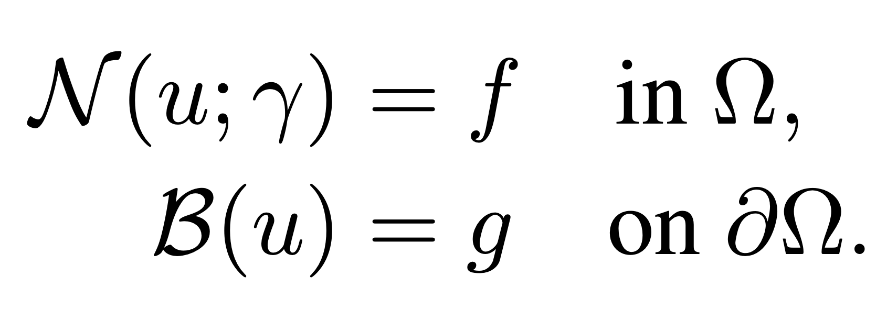
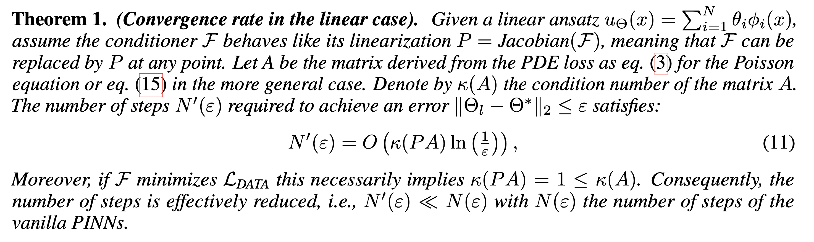
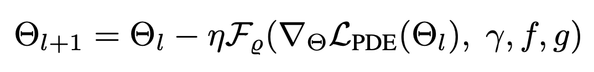

Physics-informed deep learning often faces optimization challenges due to the complexity of solving partial differential equations (PDEs), which involve exploring large solution spaces, require numerous iterations, and can lead to unstable training. These challenges arise particularly from the ill-conditioning of the optimization problem, caused by the differential terms in the loss function. To address these issues, we propose learning a solver, i.e., solving PDEs using a physics-informed iterative algorithm trained on data. Our method learns to condition a gradient descent algorithm that automatically adapts to each PDE instance, significantly accelerating and stabilizing the optimization process and enabling faster convergence of physics-aware models. Furthermore, while traditional physics-informed methods solve for a single PDE instance, our approach addresses parametric PDEs. Specifically, our method integrates the physical loss gradient with the PDE parameters to solve over a distribution of PDE parameters, including coefficients, initial conditions, or boundary conditions. We demonstrate the effectiveness of our method through empirical experiments on multiple datasets, comparing training and test-time optimization performance.
We focus on solving parametric PDEs of the following form, with physics-informed methods.

Physics-informed methods, focuses on solving PDE using the PDE residual and a boundary discrepancy term.
While these methods have shown promising results, Physics-based losses are ill-conditioned, due to the complexity of derivating highly non-linear neural networks. A simple computation, even on a toy example (see Section 2 of the paper), leads to very bad coniditoning number. As a consequence, solving such systems would require a large number of optimization steps, making computation very long. As illustration, solving Physic-informed Neural Networks (PINNs) typically requires 100k+ optimization steps.
We illustrate the ill-conditioning of the PDE losses below, by showing a projection of the optimization path (from left to right: optimizing the PDE or the data loss using GD and the PDE loss using our method) on the Data (top) loss landscape and the PDE (bottom) loss landscape.
These example illustrate that the Data lossl andscape is much smoother than the PDE loss landscape, making optimization toward the minimum easier. Our method succeed to find the minimum in a few steps, while not considering any additional data at test time.
In our paper "Learning a Neural Solver for Parametric PDE to Enhance Physics Informed Methods", we study how to accelerate the convergence of Physics-based optimizations problems, by learning a dedicated optimizer. Moreover, we show that, under additional assumption, this method improve conditioning of the resulting optimization problem.
The key idea in our work is to learn the optimization steps to improve the convergence of the optimization. Compared to a baseline Gradient Descent optimizer, our method expresses as:
This means that, in order to optimize some parameters denoted as 𝚯, we transform the standard GD algorithm (that only relies on the gradient of the PDE loss), using a learned neural network F. This network is trained to solve in a few steps, the related PDE, by modifying the gradient direction, toward a more efficient gradient path. The neural network F is trained using additional data, that are supposed to be available.
We evaluate the proposed method on several baselines and datasets to illustrate the benefits of our method. First, we evaluate our learned solver against baselines optimizers such as Gradient Descent, Adam or L-BFGS. Then, we compare our solver to baseline neural models.
@inproceedings{
boudec2025learning,
title={Learning a Neural Solver for Parametric {PDE}s to Enhance Physics-Informed Methods},
author={Lise Le Boudec and Emmanuel de Bezenac and Louis Serrano and Ramon Daniel Regueiro-Espino and Yuan Yin and Patrick Gallinari},
booktitle={The Thirteenth International Conference on Learning Representations},
year={2025},
url={https://openreview.net/forum?id=jqVj8vCQsT}
}